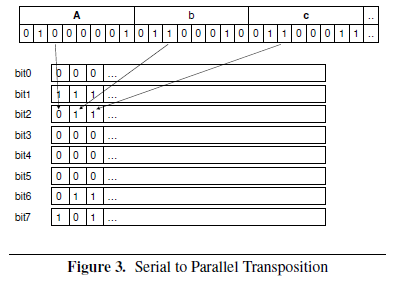
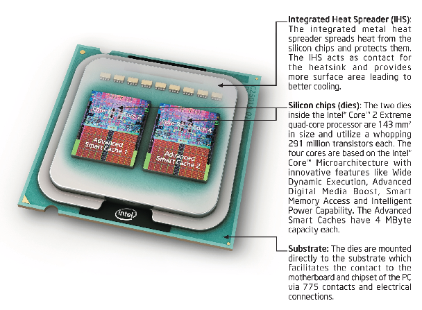

CUDA vs SSE2. Part 1.
Anatoliy Kuznetsov. Igor Tolstoy. 2009.
SSE2 vs CUDA in parallel bit stream transposition / similarity
Anatoliy Kuznetsov, Igor Tolstoy. Aug 16, 2009.
Introduction
One of the hottest trends of today is adoption of parallel programming techniques for GPGPU. GPUs of today have grown into powerful parallel machines claiming Teraflop capabilities at a commodity price. It is proven that graphics cards are very capable at floating point tasks and there are some attempts to use GPU for high bandwidth integer and logical computations applicable for databases and data-mining. We decided to experiment with CUDA on a commodity nVidia GTX 9500 card and create a mini application to dealing with a lot of integer bitwise arithmetic. For comparison we take a commodity Core2 Quad 2.4GHz system and SSE2 optimized algorithm.
Bit Transposition and Similarity Algorithm
The goal of this algorithm is to take a block of 32-bit integers and do a bit slicing, transposing the array into an equivalent matrix representation, where N-th row of the matrix corresponds to a N-th bit in the input array. Each row of the transposition matrix consists of N/32 bytes of the input stream.

Figure is taken from [1]
After transposition is accomplished we decided to compute self-similarity of the data. We need to:
The result of the similarity stage should be a right triangular distance matrix of 32x32 where diagonal elemnts represent line N population count and elements U[i,j] are Humming distance between rows

From Wikipedia article on Triangular Matrix
Why we think this parallel bit streams are important?
Parallel bit streams are equivalent but alternative representation of a bit-vector. This transformation allows the same bit-stream operations like (AND, NOT, OR, XOR and SUB) plus it allows random access. Any 32-bit word can be combined in a constant time with the controlled, predictable CPU penalty. At the same time there is plenty of data not using the full 32-bit capacity, so a light weight compression algorithm becomes possible if we know some of the bit slices are always zero bits(or one) or sufficiently similar between each other. We think this data representation has a lot of potential for data-mining application manipulating sparse vectors of all sorts.
Another example of runtime compression is the compression of limited alphabet streams. Bit-slicing algorithm can easily compress 5-letter DNA stream ('A', 'T', 'G', 'C' plus 'N') with efficiency of 3 bits per letter (other realtime compression schemes with random access often use 4 bits per letter (2 chars per byte -- easy byte alignment)).
C++ implementation for bit-stream transposition
Algorithm can be adapted for any transposition basis of 8, 16, 32 bits, but for the purpose of this article we only implement 32-bit slicing and experiment on blocks of 2048 integers (8K).
const unsigned set_block_size = 2048;
const unsigned set_block_plain_cnt = 32;
const unsigned set_block_plain_size = 64;
inline
void bit_block_transpose(
const unsigned* block,
unsigned tmatrix[bm::set_block_plain_cnt][bm::set_block_plain_size])
{
unsigned col = 0;
for (unsigned i = 0; i < bm::set_block_size;
i+=bm::set_block_plain_cnt,
block += bm::set_block_plain_cnt,
++col)
{
for (unsigned j = 0; j < bm::set_block_plain_cnt; ++j)
{
unsigned w;
w =(((block[0] >> j) & 1) << 0) |
(((block[1] >> j) & 1) << 1) |
(((block[2] >> j) & 1) << 2) |
(((block[3] >> j) & 1) << 3) |
(((block[4] >> j) & 1) << 4) |
(((block[5] >> j) & 1) << 5) |
(((block[6] >> j) & 1) << 6) |
(((block[7] >> j) & 1) << 7) |
(((block[8] >> j) & 1) << 8) |
(((block[9] >> j) & 1) << 9) |
(((block[10]>> j) & 1) << 10)|
(((block[11]>> j) & 1) << 11)|
(((block[12]>> j) & 1) << 12)|
(((block[13]>> j) & 1) << 13)|
(((block[14]>> j) & 1) << 14)|
(((block[15]>> j) & 1) << 15)|
(((block[16]>> j) & 1) << 16)|
(((block[17]>> j) & 1) << 17)|
(((block[18]>> j) & 1) << 18)|
(((block[19]>> j) & 1) << 19)|
(((block[20]>> j) & 1) << 20)|
(((block[21]>> j) & 1) << 21)|
(((block[22]>> j) & 1) << 22)|
(((block[23]>> j) & 1) << 23)|
(((block[24]>> j) & 1) << 24)|
(((block[25]>> j) & 1) << 25)|
(((block[26]>> j) & 1) << 26)|
(((block[27]>> j) & 1) << 27)|
(((block[28]>> j) & 1) << 28)|
(((block[29]>> j) & 1) << 29)|
(((block[30]>> j) & 1) << 30)|
(((block[31]>> j) & 1) << 31);
unsigned* row = tmatrix[j];
row[col] = w;
} // for j
} // for i
}
C++ implementation of NxN Humming distance:
inline
void bit_block_tmatrix_distance(
const unsigned tmatrix[set_block_plain_cnt][set_block_plain_size],
unsigned distance[set_block_plain_cnt][set_block_plain_cnt])
{
for (unsigned i = 0; i < bm::set_block_plain_cnt; ++i)
{
distance[i][i] = 0;
for (unsigned j = i + 1; j < bm::set_block_plain_cnt; ++j)
{
const unsigned* row1 = tmatrix[i];
const unsigned* row1_end = row1 + bm::set_block_plain_size;
const unsigned* row2 = tmatrix[j];
#ifdef BMVECTOPT
unsigned count = VECT_BITCOUNT_XOR(row1, row1_end, row2);
#else
unsigned count = 0;
do
{
BM_INCWORD_BITCOUNT(count, row1[0] ^ row2[0]);
BM_INCWORD_BITCOUNT(count, row1[1] ^ row2[1]);
BM_INCWORD_BITCOUNT(count, row1[2] ^ row2[2]);
BM_INCWORD_BITCOUNT(count, row1[3] ^ row2[3]);
row1+=4;
row2+=4;
} while (row1 < row1_end);
#endif
distance[i][j] = count;
} // for j
} // for i
}
The problem of Humming distance is embarassingly parallel and can be easily coded using SSE2 SIMD (and probably any other SIMD sistem). SSE2 optimizations are implementad in BitMagic library and described here: "128-bit SSE2 optimization".
The parallel population counting algorithm boils down to:
int count(long long b)
{
b = (b & 0x5555555555555555LU) + (b >> 1 & 0x5555555555555555LU);
b = (b & 0x3333333333333333LU) + (b >> 2 & 0x3333333333333333LU);
b = b + (b >> 4) & 0x0F0F0F0F0F0F0F0FLU;
b = b + (b >> 8);
b = b + (b >> 16);
b = b + (b >> 32) & 0x0000007F;
return (int) b;
}
Algorithmic complexity of NxN Humming distance is definately higher than transposition. (Some algorithmic optimization techniques can probably be applied to eliminate unnecessary scans).
32-bit CPU vs. SSE2
Long story short: SSE2 parallel algorithm wins with a long margin. We tested on different configurations, SSE2 optimized code is typically 2 times faster than 32-bit code (with lookup-table based bit counting). (Matrix transposition was exactly the same). Interesting note is that on Intel Atom processor SSE2 code wins with a higher margin, maybe in-order execution makes 32-bit code slow, maybe SIMD unit on Atom is very good...

Intel Core2 Quad CPU. (c) Intel Corp.
SSE2 vs SSE4.2
Unfortunately we have no data at this point. Nehalem microarchitecture implements hardware POPCNT, so it should be faster. Unfortunately it looks like Intel chose not to implement true SIMD 128-bit version of POPCNT, so final performance of a SSE + POPCNT mix is an open question...
nVidia CUDA hardware
For this experiment nVidia fully CUDA 2.3 capable nVidia GeForce 9500 GT PCI-E. This GPU is generations behind from the GT200 nVidia chip but still offers adequate casual gaming performance. This card packages 32 Shader Processors and dissipates 60W of power.

nVidia GeForce 9500 GT PCI-E
CUDA host program (CPU)
#include < stdlib.h >
#include < stdio.h >
#include < string.h >
#include < math.h >
#include "cutil_inline.h"
#include "tm_kernel.cu"
#define size_B 2048
#define size_C 32
#define mem_size_B sizeof(unsigned int) * size_B * PROC
#define mem_size_C sizeof(unsigned int) * size_C * size_C * PROC
void randomInit(unsigned int * data, int size, unsigned int val)
{
for (int i = 0; i < size; ++i)
data[i] = (i/size_B + 1);
}
void runTest(int argc, char** argv)
{
unsigned int * h_A;
unsigned int * h_B;
unsigned int * h_C;
unsigned int * d_A;
unsigned int * d_B;
unsigned int * d_C;
unsigned int timer = 0;
if( cutCheckCmdLineFlag(argc, (const char**)argv, "device") )
cutilDeviceInit(argc, argv);
else
cutilSafeCall(cudaSetDevice( cutGetMaxGflopsDeviceId()));
cutilSafeCall(cudaSetDeviceFlags(cudaDeviceMapHost));
cutilCheckError(cutCreateTimer(&timer));
cutilCheckError(cutStartTimer(timer));
cutilSafeCall(cudaHostAlloc((void **)&h_A,mem_size_B,cudaHostAllocMapped |
cudaHostAllocWriteCombined | cudaHostAllocPortable));
cutilSafeCall(cudaHostAlloc((void **)&h_B,mem_size_B,cudaHostAllocMapped |
cudaHostAllocWriteCombined | cudaHostAllocPortable));
cutilSafeCall(cudaHostAlloc((void **)&h_C,mem_size_C,cudaHostAllocMapped |
cudaHostAllocWriteCombined | cudaHostAllocPortable));
cutilSafeCall(cudaHostGetDevicePointer (&d_A, h_A, 0));
cutilSafeCall(cudaHostGetDevicePointer (&d_B, h_B, 0));
cutilSafeCall(cudaHostGetDevicePointer (&d_C, h_C, 0));
for (unsigned int i = 0; i < 10000; i++)
{
randomInit(h_A, size_B * PROC,i);
cutilSafeCall(cudaMemcpyToSymbol(c_A, h_A,mem_size_B,0,cudaMemcpyHostToDevice));
dim3 trs3(32,16);
TM<<< PROC,trs3 >>>(d_B,d_C);
cutilSafeCall(cudaThreadSynchronize());
}
for (unsigned int k = 0; k < PROC; k++)
{
for (unsigned int i = 0; i < size_C; i++)
{
for (unsigned int j = 0; j < size_C; j++)
{
printf("%5d ",h_C[(k << 10) + size_C * i + j]);
}
printf("\n");
}
}
cutilSafeCall(cudaFreeHost(h_A));
cutilSafeCall(cudaFreeHost(h_B));
cutilSafeCall(cudaFreeHost(h_C));
cutilCheckError(cutStopTimer(timer));
printf("Processing time: %f (ms) \n", cutGetTimerValue(timer)/(10000 * PROC));
cutilCheckError(cutDeleteTimer(timer));
cutilSafeCall(cudaThreadExit());
}
int main(int argc, char** argv)
{
runTest(argc, argv);
cutilExit(argc, argv);
}
CUDA device program (GPU)
#define PROC 8
#ifndef _TM_KERNEL_H_
#define _TM_KERNEL_H_
__device__ __constant__ unsigned int c_A[2048 * PROC];
__global__ void TM(unsigned int* B, unsigned int*C) {
__shared__ unsigned int Bs[2048];
int ibit = threadIdx.x; //32
int iblock = threadIdx.y; //16
int jBlock = blockIdx.x;
unsigned int * Ax = &c_A[(jBlock << 11) + (iblock << 7)];
unsigned int * Bx = &Bs[(ibit << 6) + (iblock << 2)];
unsigned int * By = &B [(jBlock << 11) + (ibit << 6) + (iblock << 2)];
unsigned int * Cy = &C[jBlock << 10];
By[0] = Bx[0] =
(((Ax[0 ] >> ibit) & 1) << 0 ) | (((Ax[1 ] >> ibit) & 1) << 1 ) |
(((Ax[2 ] >> ibit) & 1) << 2 ) | (((Ax[3 ] >> ibit) & 1) << 3 ) |
(((Ax[4 ] >> ibit) & 1) << 4 ) | (((Ax[5 ] >> ibit) & 1) << 5 ) |
(((Ax[6 ] >> ibit) & 1) << 6 ) | (((Ax[7 ] >> ibit) & 1) << 7 ) |
(((Ax[8 ] >> ibit) & 1) << 8 ) | (((Ax[9 ] >> ibit) & 1) << 9 ) |
(((Ax[10] >> ibit) & 1) << 10) | (((Ax[11] >> ibit) & 1) << 11) |
(((Ax[12] >> ibit) & 1) << 12) | (((Ax[13] >> ibit) & 1) << 13) |
(((Ax[14] >> ibit) & 1) << 14) | (((Ax[15] >> ibit) & 1) << 15) |
(((Ax[16] >> ibit) & 1) << 16) | (((Ax[17] >> ibit) & 1) << 17) |
(((Ax[18] >> ibit) & 1) << 18) | (((Ax[19] >> ibit) & 1) << 19) |
(((Ax[20] >> ibit) & 1) << 20) | (((Ax[21] >> ibit) & 1) << 21) |
(((Ax[22] >> ibit) & 1) << 22) | (((Ax[23] >> ibit) & 1) << 23) |
(((Ax[24] >> ibit) & 1) << 24) | (((Ax[25] >> ibit) & 1) << 25) |
(((Ax[26] >> ibit) & 1) << 26) | (((Ax[27] >> ibit) & 1) << 27) |
(((Ax[28] >> ibit) & 1) << 28) | (((Ax[29] >> ibit) & 1) << 29) |
(((Ax[30] >> ibit) & 1) << 30) | (((Ax[31] >> ibit) & 1) << 31) ;
Ax += 32;
By[1] = Bx[1] =
(((Ax[0 ] >> ibit) & 1) << 0 ) | (((Ax[1 ] >> ibit) & 1) << 1 ) |
(((Ax[2 ] >> ibit) & 1) << 2 ) | (((Ax[3 ] >> ibit) & 1) << 3 ) |
(((Ax[4 ] >> ibit) & 1) << 4 ) | (((Ax[5 ] >> ibit) & 1) << 5 ) |
(((Ax[6 ] >> ibit) & 1) << 6 ) | (((Ax[7 ] >> ibit) & 1) << 7 ) |
(((Ax[8 ] >> ibit) & 1) << 8 ) | (((Ax[9 ] >> ibit) & 1) << 9 ) |
(((Ax[10] >> ibit) & 1) << 10) | (((Ax[11] >> ibit) & 1) << 11) |
(((Ax[12] >> ibit) & 1) << 12) | (((Ax[13] >> ibit) & 1) << 13) |
(((Ax[14] >> ibit) & 1) << 14) | (((Ax[15] >> ibit) & 1) << 15) |
(((Ax[16] >> ibit) & 1) << 16) | (((Ax[17] >> ibit) & 1) << 17) |
(((Ax[18] >> ibit) & 1) << 18) | (((Ax[19] >> ibit) & 1) << 19) |
(((Ax[20] >> ibit) & 1) << 20) | (((Ax[21] >> ibit) & 1) << 21) |
(((Ax[22] >> ibit) & 1) << 22) | (((Ax[23] >> ibit) & 1) << 23) |
(((Ax[24] >> ibit) & 1) << 24) | (((Ax[25] >> ibit) & 1) << 25) |
(((Ax[26] >> ibit) & 1) << 26) | (((Ax[27] >> ibit) & 1) << 27) |
(((Ax[28] >> ibit) & 1) << 28) | (((Ax[29] >> ibit) & 1) << 29) |
(((Ax[30] >> ibit) & 1) << 30) | (((Ax[31] >> ibit) & 1) << 31) ;
Ax += 32;
By[2] = Bx[2] =
(((Ax[0 ] >> ibit) & 1) << 0 ) | (((Ax[1 ] >> ibit) & 1) << 1 ) |
(((Ax[2 ] >> ibit) & 1) << 2 ) | (((Ax[3 ] >> ibit) & 1) << 3 ) |
(((Ax[4 ] >> ibit) & 1) << 4 ) | (((Ax[5 ] >> ibit) & 1) << 5 ) |
(((Ax[6 ] >> ibit) & 1) << 6 ) | (((Ax[7 ] >> ibit) & 1) << 7 ) |
(((Ax[8 ] >> ibit) & 1) << 8 ) | (((Ax[9 ] >> ibit) & 1) << 9 ) |
(((Ax[10] >> ibit) & 1) << 10) | (((Ax[11] >> ibit) & 1) << 11) |
(((Ax[12] >> ibit) & 1) << 12) | (((Ax[13] >> ibit) & 1) << 13) |
(((Ax[14] >> ibit) & 1) << 14) | (((Ax[15] >> ibit) & 1) << 15) |
(((Ax[16] >> ibit) & 1) << 16) | (((Ax[17] >> ibit) & 1) << 17) |
(((Ax[18] >> ibit) & 1) << 18) | (((Ax[19] >> ibit) & 1) << 19) |
(((Ax[20] >> ibit) & 1) << 20) | (((Ax[21] >> ibit) & 1) << 21) |
(((Ax[22] >> ibit) & 1) << 22) | (((Ax[23] >> ibit) & 1) << 23) |
(((Ax[24] >> ibit) & 1) << 24) | (((Ax[25] >> ibit) & 1) << 25) |
(((Ax[26] >> ibit) & 1) << 26) | (((Ax[27] >> ibit) & 1) << 27) |
(((Ax[28] >> ibit) & 1) << 28) | (((Ax[29] >> ibit) & 1) << 29) |
(((Ax[30] >> ibit) & 1) << 30) | (((Ax[31] >> ibit) & 1) << 31) ;
Ax += 32;
By[3] = Bx[3] =
(((Ax[0 ] >> ibit) & 1) << 0 ) | (((Ax[1 ] >> ibit) & 1) << 1 ) |
(((Ax[2 ] >> ibit) & 1) << 2 ) | (((Ax[3 ] >> ibit) & 1) << 3 ) |
(((Ax[4 ] >> ibit) & 1) << 4 ) | (((Ax[5 ] >> ibit) & 1) << 5 ) |
(((Ax[6 ] >> ibit) & 1) << 6 ) | (((Ax[7 ] >> ibit) & 1) << 7 ) |
(((Ax[8 ] >> ibit) & 1) << 8 ) | (((Ax[9 ] >> ibit) & 1) << 9 ) |
(((Ax[10] >> ibit) & 1) << 10) | (((Ax[11] >> ibit) & 1) << 11) |
(((Ax[12] >> ibit) & 1) << 12) | (((Ax[13] >> ibit) & 1) << 13) |
(((Ax[14] >> ibit) & 1) << 14) | (((Ax[15] >> ibit) & 1) << 15) |
(((Ax[16] >> ibit) & 1) << 16) | (((Ax[17] >> ibit) & 1) << 17) |
(((Ax[18] >> ibit) & 1) << 18) | (((Ax[19] >> ibit) & 1) << 19) |
(((Ax[20] >> ibit) & 1) << 20) | (((Ax[21] >> ibit) & 1) << 21) |
(((Ax[22] >> ibit) & 1) << 22) | (((Ax[23] >> ibit) & 1) << 23) |
(((Ax[24] >> ibit) & 1) << 24) | (((Ax[25] >> ibit) & 1) << 25) |
(((Ax[26] >> ibit) & 1) << 26) | (((Ax[27] >> ibit) & 1) << 27) |
(((Ax[28] >> ibit) & 1) << 28) | (((Ax[29] >> ibit) & 1) << 29) |
(((Ax[30] >> ibit) & 1) << 30) | (((Ax[31] >> ibit) & 1) << 31) ;
__syncthreads();
if (ibit == iblock)
{
long long * BX = (long long *)&Bs[ibit << 6];
Cy[(ibit << 5) + iblock] =
__popcll(BX[0]) + __popcll(BX[1]) + __popcll(BX[2]) + __popcll(BX[3]) +
__popcll(BX[4]) + __popcll(BX[5]) + __popcll(BX[6]) + __popcll(BX[7]) +
__popcll(BX[8]) + __popcll(BX[9]) + __popcll(BX[10]) + __popcll(BX[11]) +
__popcll(BX[12]) + __popcll(BX[13]) + __popcll(BX[14]) + __popcll(BX[15]) +
__popcll(BX[16]) + __popcll(BX[17]) + __popcll(BX[18]) + __popcll(BX[19]) +
__popcll(BX[20]) + __popcll(BX[21]) + __popcll(BX[22]) + __popcll(BX[23]) +
__popcll(BX[24]) + __popcll(BX[25]) + __popcll(BX[26]) + __popcll(BX[27]) +
__popcll(BX[28]) + __popcll(BX[29]) + __popcll(BX[30]) + __popcll(BX[31]) ;
ibit = 31 - ibit;
iblock = 31 - iblock;
long long * BY = (long long *)&Bs[iblock << 6];
Cy[(ibit << 5) + iblock] =
__popcll(BY[0]) + __popcll(BY[1]) + __popcll(BY[2]) + __popcll(BY[3]) +
__popcll(BY[4]) + __popcll(BY[5]) + __popcll(BY[6]) + __popcll(BY[7]) +
__popcll(BY[8]) + __popcll(BY[9]) + __popcll(BY[10]) + __popcll(BY[11]) +
__popcll(BY[12]) + __popcll(BY[13]) + __popcll(BY[14]) + __popcll(BY[15]) +
__popcll(BY[16]) + __popcll(BY[17]) + __popcll(BY[18]) + __popcll(BY[19]) +
__popcll(BY[20]) + __popcll(BY[21]) + __popcll(BY[22]) + __popcll(BY[23]) +
__popcll(BY[24]) + __popcll(BY[25]) + __popcll(BY[26]) + __popcll(BY[27]) +
__popcll(BY[28]) + __popcll(BY[29]) + __popcll(BY[30]) + __popcll(BY[31]) ;
}
else
{
if (ibit > iblock)
{
ibit = 31 - ibit;
iblock = 31 - iblock;
}
long long * BX = (long long *)&Bs[ibit << 6];
long long * BY = (long long *)&Bs[iblock << 6];
Cy[(ibit << 5) + iblock] = Cy[(iblock << 5) + ibit] =
__popcll(BX[0 ]^BY[0 ]) + __popcll(BX[1 ]^BY[1 ]) + __popcll(BX[2 ]^BY[2 ]) +
__popcll(BX[3 ]^BY[3 ]) + __popcll(BX[4 ]^BY[4 ]) + __popcll(BX[5 ]^BY[5 ]) +
__popcll(BX[6 ]^BY[6 ]) + __popcll(BX[7 ]^BY[7 ]) +
__popcll(BX[8 ]^BY[8 ]) + __popcll(BX[9 ]^BY[9 ]) + __popcll(BX[10]^BY[10]) +
__popcll(BX[11]^BY[11]) + __popcll(BX[12]^BY[12]) + __popcll(BX[13]^BY[13]) +
__popcll(BX[14]^BY[14]) + __popcll(BX[15]^BY[15]) +
__popcll(BX[16]^BY[16]) + __popcll(BX[17]^BY[17]) + __popcll(BX[18]^BY[18]) +
__popcll(BX[19]^BY[19]) + __popcll(BX[20]^BY[20]) + __popcll(BX[21]^BY[21]) +
__popcll(BX[22]^BY[22]) + __popcll(BX[23]^BY[23]) +
__popcll(BX[24]^BY[24]) + __popcll(BX[25]^BY[25]) + __popcll(BX[26]^BY[26]) +
__popcll(BX[27]^BY[27]) + __popcll(BX[28]^BY[28]) + __popcll(BX[29]^BY[29]) +
__popcll(BX[30]^BY[30]) + __popcll(BX[31]^BY[31]) ;
}
}
#endif // #ifndef _TM_H_
CUDA optimization notes
We decided to resist the temptation to print here all 256 variants of CUDA kernel we tried. But we definitely want to outline the final tricks we used:
Benchmark results
1.Core2 Quad 6600 2.4GHz(1 core) 32-bit -- 0.22ms 2.Core2 Quad (1 core) SSE2 -- 0.12ms 3.GT 9500 (1 SM) -- 0.42ms 4.GT 9500 (4 SM) -- 0.16ms (4 blocks at a time!)
As you can see at integer operation 1 GT 9500 Stream Multiprocessor looses to 1 SSE aware CPU Core, while 4 SM start operating on par with 1 CPU Core. Raw integer performance of the GPU seems to be higher than CPU, but data transfer certainly takes its lions share. Core 2 Quad features 4 CPU cores, so it is also capable of running 4 blocks at a time. nVidia GT200 shows 30 SMs(?).
Is CUDA worth it?
Economics of CUDA development is not bad but it is not particularly good. CUDA language pretends to be C, but really looks like a good Macro ASM mixed with declarative approach for compute grid configuration. Graphics card has no Operating System or complex Task Planner/ Scheduler of its own, which is both good and bad. Direct access to the HW is good when your task scales well. If you need to partition your program into non-uniform small subtasks, you cannot run too many different tasks asyncronously in parallel without writing an "uber-shader" or "uber-CUDA-kernel". Uber-shaders are predictably complex and vulnerable to combinatorial explosion of variants of subalgorithms in the GPU kernel code. So real-life scalability of a GPU solution should be limited by the affordable complexity of software tools, CPU-GPU middleware to combine and execute batches of small tasks on GPU. A lot of GPU programming reminds us functional or declarative programming, so functional high level language should be very helpful for auto-parallelisation of GPU tasks.
Larabee?
Ecomonics of vector SIMD programming (SSE) also requires skills, where the main issue is current generation of SSE is NOT Turing complete (not even close). From the excellent article of Michael Abrash "A First Look at the Larrabee New Instructions (LRBni)" it seems that LRBni (Larabee vector command set) is going to be better, because it is at least vector complete (provides vector gather/scatter), which makes it increadibly awesome (but not Turing complete). Looking at both cases: SSE2 and CUDA we can extrapolate(well, speculate) both performance and complexity of programming for the future Intel Larabee hardware. Larabee will have 512-bit vector registers. This should be pretty fast if your loop is branchless. If you need a branch - LBNi provides "vector compare instructions" (with an open question on how to do actual branching after a VECTOR comparison?).
The upcoming GP-GPU battle of CUDA3 vs. Larabee is going to be pretty interesting. If raw performance numbers are close to equal(?) the winning factor becomes compilers, languages, libraries, profiles and debuggers: tools (and (manufacturing) costs).
Conclusion
GP-GPU integer optimization start making sense if we want to combine a lot of computational resources in one box, growing a data-mining super-server (or cluster of super servers). Combining CPUs+GPU offers unprecedented concentration of computational resources otherwise available only for distributed systems like MPI, Google's Map-Reduce, Hadoop, other cluster-ware. Once our picture factors-in distributed cloud computing on the net, GP-GPU problems like PCIe latency suddenly become very affordable (network based cluster-ware cannot compete with realtime GPU). This allows creation of database super-nodes, where multiple CPUs cores and GPUs are combined with fast random access Solid State Drives, RAM Drives, etc. Concentartion of various silicon based (computational) resources can save bandwidth to slow devices (read: Hard Drives and Network Storage).
Another consideration is that "The Gigahertz Race" is now over, shapes into "The Parallel Race". It means algorithms and systems should be adapted, revisited or re-architected to meet the new reality of hundreds of parallel threads (not necessarily pthreads) where data needs restructure to minimize collisions and facilitate parallel access.
We hope this article is useful for other developers. We would be happy to see your comments, suggestions, objections at BitMagic library BLOG.